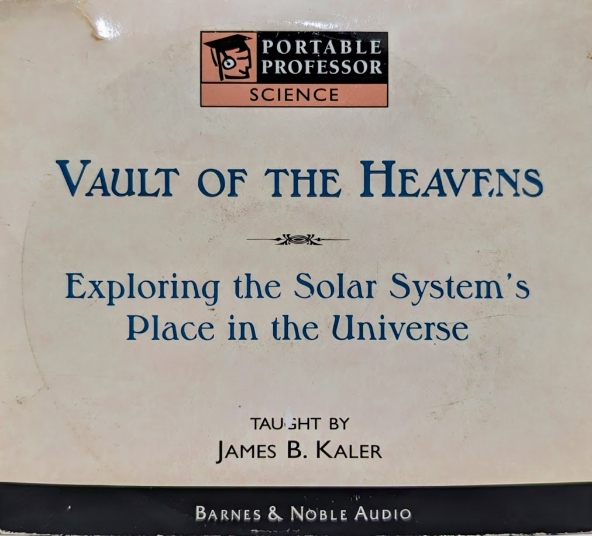
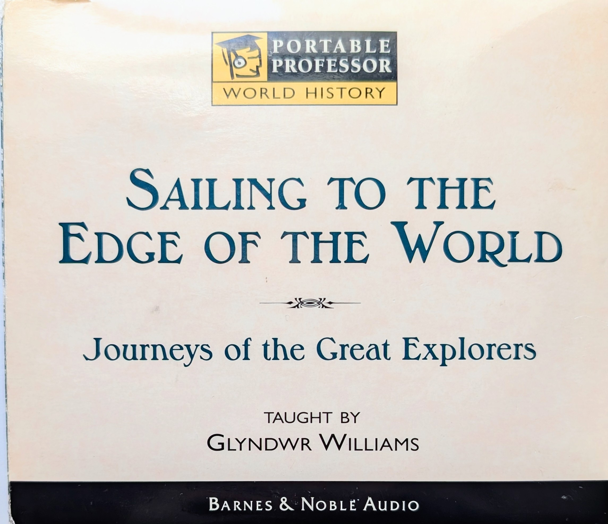

| yesteryear forever |
Lectures
Vault of the Heavens: Exploring the Solar System's Place in the Universe (Portable Professor Series) | James B. Kaler

James B. Kaler - Vault of the Heavens
- 1 - We and the Universe
- 2 - Reflections of the Spinning Earth
- 3 - Sun and Seasons
- 4 - Stories in the sky: Constellations
- 5 - Romance of the Moon
- 6 - Happy Wanderers: The Planets
- 7 - Keeping it all Together
- 8 - Reaching Outward
- 9 - Our Domain: Earth and the Moon
- 10 - Iron Planets: Mercury, Venus, and Mars
- 11 - Monsters of the Midway: Jupiter and Saturn
- 12 - Distant Outposts: Uranus, Neptune, and Pluto
- 13 - Leftovers of Creation: Comets, Asteroids, and Meteors
- 14 - Creation
Sailing to the Edge of the World: Journeys of the Great Explorers (Portable Professor Series) | Glyndwr Williams

Glyndwr Williams - Sailing to the Edge of the World
- 1 - The World Before Columbus
- 2 - The Voyage of Christopher Columbus
- 3 - The Voyage of Vasco de Gama and the "Sea Road" to the East
- 4 - The First Circumnavigation: The Voyage of Ferdinand Magellan
- 5 - The Second Circumnavigation: The Voyage of Francis Drake
- 6 - The Tools of Discovery
- 7 - Life at Sea
- 8 - Voyages of Delusion: The Search for the Northwest Passage
- 9 - The Pacific Ocean: The Great Unknown
- 10 - The "Rambling Voyages" of William Dampier
- 11 - Vitus Bering and the Russian Discovery of America
- 12 - The Pacific Voyages of James Cook
- 13 - The Revolution in Navigation and Health
- 14 - The World After Cook
One God, Three Faiths: Judaism, Christianity, and Islam (Portable Professor Series) | F.E. Peters
F.E. Peters - One God, Three Faiths
- 1 - In The Beginning...
- 2 - The Israelite Experience
- 3 - From Israelite to Jew
- 4 - Jesus of Nazareth: Teacher, Messiah, Redeemer
- 5 - The Spread of Christianity
- 6 - Muhammad, Prophet of Mecca
- 7 - Muhammad, Lord of Medina
- 8 - The "People of the Book": Monotheists and Their Revelations
- 9 - Tradition and Law
- 10 - Defining the Community
- 11 - Governing the Community
- 12 - Defending the Community
- 13 - Worshipping God
- 14 - Reaching for God
Dan Carlin's Hardcore History Podcast, 'Ghosts of the Ostfront' series: